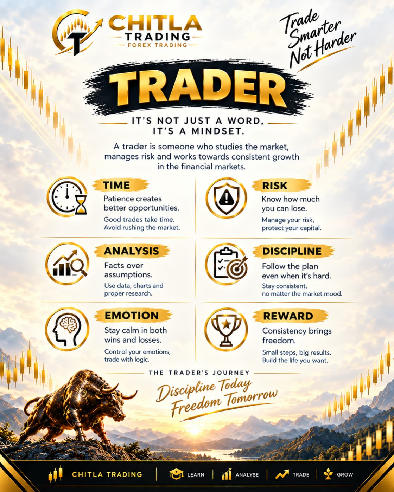

1. Trend Following
Study the direction of price movement and look for opportunities that align with an established trend. Avoid assuming that a trend will continue indefinitely.
Study: Higher highs, lower lows, and trend structure.
PLAN WITH PURPOSE
A strategy is more than an entry signal. It is a structured approach to analysing the market, managing risk, and making decisions consistently.
Explore Strategies
THE FOUNDATIONS
Learn the principles behind common trading approaches before deciding which methods suit your knowledge, time, and risk tolerance.
Study the direction of price movement and look for opportunities that align with an established trend. Avoid assuming that a trend will continue indefinitely.
Study: Higher highs, lower lows, and trend structure.

Identify price areas where buying or selling pressure may emerge. Treat these areas as zones rather than guaranteed turning points.
Study: Price reactions, breakouts, and retests.

Learn how candle bodies, wicks, and closing prices communicate information about price movement during a selected period.
Study: Candle structure and market context.
Compare broader market structure with a more detailed chart. A higher timeframe can provide context, while a lower timeframe may help refine analysis.
Study: Trend alignment and timeframe consistency.

Recognise emotional reactions such as fear, impatience, and overconfidence. A written plan can help reduce impulsive decisions.
Study: Patience, routine, and emotional awareness.

Record your reasoning, planned risk, and outcome. Reviewing a meaningful sample of trades can reveal patterns and areas for improvement.
Study: Journaling, consistency, and evaluation.
PROTECT YOUR CAPITAL
No strategy wins every time. Decide in advance how much you are prepared to risk, where your analysis is invalidated, and when you will stay out of the market.
THE CHITLA APPROACH
Sustainable development comes from a repeatable process—not from chasing signals, shortcuts, or promises of guaranteed returns.
Build a clear understanding of market structure and trading terminology.
Use a demo account or historical charts to practise without risking real capital.
Keep records, evaluate your decisions, and improve your process over time.
IMPORTANT INFORMATION
This website provides educational information only. It is not personalised investment advice or a recommendation to buy or sell any financial instrument. Trading involves risk, including the possible loss of your capital. Past performance does not guarantee future results.